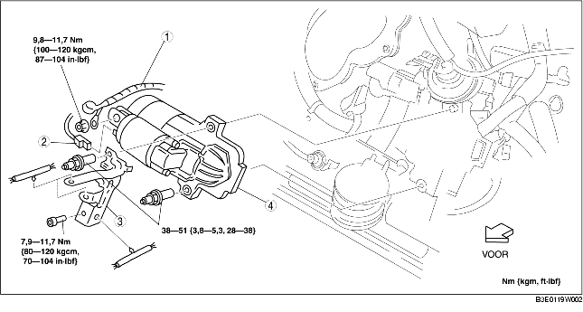

VERWIJDEREN/PLAATSEN STARTMOTOR [LF]
B3E011918400W04
-
Waarschuwing
-
• Als de accukabels nog aangesloten zijn, zullen er vonken ontstaan als aansluiting B de carrosserie raakt. Hierdoor kan letsel, brand en schade aan de elektrische componenten ontstaan. Neem daarom altijd eerst de minkabel van de accu los alvorens onderstaande procedure uit te voeren.
1. Verwijder de accukap. (Zie VERWIJDEREN/PLAATSEN ACCU [LF].)
2. Neem de minkabel van de accu los.
3. Verwijder het onderpaneel.
4. Verwijder de koppelingswerkcilinder (MT) (Zie VERWIJDEREN/PLAATSEN HANDGESCHAKELDE TRANSMISSIE [G35M-R].)
5. Verwijder de onderdelen in de aangegeven volgorde, zie de tabel.
6. Plaats de onderdelen in omgekeerde volgorde.

|
1
|
Draad aansluiting B
|
|
2
|
Stekker aansluiting S
|
|
3
|
Bedradingssteun
|
|
4
|
Startmotor
|